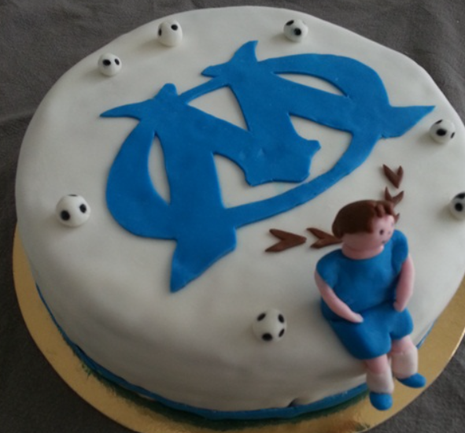

Gaëtan Wittebolle

- Born in 1993 -
L'OM, à jamais les premiers
L'Olympique de Marseille demeure à jamais les premiers, portant avec fierté l'héritage d'une passion indomptable et de victoires historiques. Leurs exploits légendaires sur le terrain, combinés à une ferveur inébranlable de la fanbase, font de l'OM bien plus qu'un club de football, mais une institution intemporelle gravée dans l'âme du sport français. Avec chaque victoire, l'OM écrit une page inoubliable de son glorieux passé, inscrivant son nom dans l'histoire du football avec une aura inégalée.
Egalement passionné de cuisine...
Voici la recette de mon gâteau préféré

Instructions :
-
Établissez une préparation tactique à 180°C.
-
Entraînez le beurre et le sucre, recrutez les œufs un par un, ajoutez la vanille en capitaine.
-
Concevez un plan de jeu avec farine, levure, et sel. Effectuez des passes avec le lait.
-
Jouez le temps, 25-30 min au four.
-
Laissez refroidir, analysez la performance.
-
Appliquez la tactique de crème au beurre sur le terrain du gâteau.
-
Exécutez une tactique de fondant, maîtrisez le lissage.
-
Attaquez avec des détails tactiques (logo OM, rayures).
-
Finalisez avec la stratégie comestible de l'OM.
- Établissez une préparation tactique à 180°C.
- Entraînez le beurre et le sucre, recrutez les œufs un par un, ajoutez la vanille en capitaine.
- Concevez un plan de jeu avec farine, levure, et sel. Effectuez des passes avec le lait.
- Jouez le temps, 25-30 min au four.
- Laissez refroidir, analysez la performance.
- Appliquez la tactique de crème au beurre sur le terrain du gâteau.
- Exécutez une tactique de fondant, maîtrisez le lissage.
- Attaquez avec des détails tactiques (logo OM, rayures).
- Finalisez avec la stratégie comestible de l'OM.